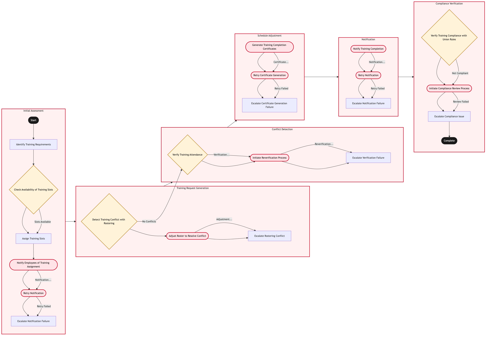

Updated 2026-08-21
Recurrent Training Scheduling and Compliance
Process flow
Click to zoom

Process steps
▼
Phase 1 — Initial Assessment
6 steps
| Step | Activity | Role | System | Input | Output | KPI | Dec | Exc | Pain point |
|---|---|---|---|---|---|---|---|---|---|
| 1.1 | Identify Training Requirements | YYZ Operations Control Duty Manager | Jeppesen CrewB | Employee records and union agreements | List of employees requiring training | 90% accuracy in identifying training needs within 24 hours | N | N | Inaccurate identification can lead to missed compliance deadlines. |
| 1.2 | Check Availability of Training Slots | Training Coordinator | DayforceB | Employee availability and training schedule | Available training slots | 85% slot utilization rate within 48 hours | Y | N | Limited availability can cause delays in training sessions. |
| 1.3 | Assign Training Slots | Training Coordinator | DayforceB | Employee list and available slots | Assigned training schedule | 95% successful assignments within 72 hours | N | N | Overbooking can lead to scheduling conflicts. |
| 1.4 | Notify Employees of Training Assignment | Training Coordinator | Lufthansa Systems NetLineB | Assigned training schedule | Notification sent to employees | 98% notification success rate within 24 hours | N | Y | Failed notifications can result in missed training sessions. |
| 1.5 | Retry Notification | Training Coordinator | Lufthansa Systems NetLineB | Employee list and failed notifications | Retried notification status | 90% successful retries within 48 hours | N | Y | Multiple failures can delay training sessions. |
| 1.6 | Escalate Notification Failure | Training Coordinator | Lufthansa Systems NetLineB | Employee list and failed notifications | Escalation to IT support | 100% escalation rate within 72 hours | N | N | Unresolved notification issues can lead to legal repercussions. |
▼
Phase 2 — Training Request Generation
3 steps
| Step | Activity | Role | System | Input | Output | KPI | Dec | Exc | Pain point |
|---|---|---|---|---|---|---|---|---|---|
| 2.1 | Detect Training Conflict with Rostering | YYZ Operations Control Duty Manager | Jeppesen CrewB | Assigned training schedule and rostering data | List of conflicts | 80% conflict detection rate within 24 hours | Y | N | Conflicts can disrupt flight operations. |
| 2.2 | Adjust Roster to Resolve Conflict | YYZ Operations Control Duty Manager | Jeppesen CrewB | Conflict list and rostering data | Adjusted roster | 90% successful adjustments within 48 hours | N | Y | Adjustments can lead to further conflicts or resource shortages. |
| 2.3 | Escalate Rostering Conflict | YYZ Operations Control Duty Manager | Jeppesen CrewB | Conflict list and adjusted roster | Escalation to HR and union representatives | 100% escalation rate within 72 hours | N | N | Unresolved conflicts can lead to operational disruptions. |
▼
Phase 3 — Conflict Detection
3 steps
| Step | Activity | Role | System | Input | Output | KPI | Dec | Exc | Pain point |
|---|---|---|---|---|---|---|---|---|---|
| 3.1 | Verify Training Attendance | Training Coordinator | DayforceB | Assigned training schedule and attendance records | Attendance verification report | 95% accurate verification rate within 48 hours | Y | N | Inaccurate verifications can lead to compliance issues. |
| 3.2 | Initiate Reverification Process | Training Coordinator | DayforceB | Verification report and attendance records | Revised verification status | 90% successful revisions within 72 hours | N | Y | Multiple verifications can delay training completion. |
| 3.3 | Escalate Verification Failure | Training Coordinator | DayforceB | Verification report and attendance records | Escalation to HR and union representatives | 100% escalation rate within 96 hours | N | N | Unresolved verifications can lead to legal repercussions. |
▼
Phase 4 — Schedule Adjustment
3 steps
| Step | Activity | Role | System | Input | Output | KPI | Dec | Exc | Pain point |
|---|---|---|---|---|---|---|---|---|---|
| 4.1 | Generate Training Completion Certificates | Training Coordinator | DayforceB | Verified attendance records | Training completion certificates | 98% certificate generation rate within 24 hours | N | Y | Certificate failures can delay requalification. |
| 4.2 | Retry Certificate Generation | Training Coordinator | DayforceB | Verified attendance records and failed certificates | Retried certificate status | 90% successful retries within 48 hours | N | Y | Multiple failures can delay requalification. |
| 4.3 | Escalate Certificate Generation Failure | Training Coordinator | DayforceB | Verified attendance records and failed certificates | Escalation to IT support | 100% escalation rate within 72 hours | N | N | Unresolved certificate issues can lead to legal repercussions. |
▼
Phase 5 — Notification
3 steps
| Step | Activity | Role | System | Input | Output | KPI | Dec | Exc | Pain point |
|---|---|---|---|---|---|---|---|---|---|
| 5.1 | Notify Training Completion | Training Coordinator | Lufthansa Systems NetLineB | Completed training certificates | Notification sent to relevant parties | 98% notification success rate within 24 hours | N | Y | Failed notifications can lead to missed requalification deadlines. |
| 5.2 | Retry Notification | Training Coordinator | Lufthansa Systems NetLineB | Completed training certificates and failed notifications | Retried notification status | 90% successful retries within 48 hours | N | Y | Multiple failures can delay requalification. |
| 5.3 | Escalate Notification Failure | Training Coordinator | Lufthansa Systems NetLineB | Completed training certificates and failed notifications | Escalation to IT support | 100% escalation rate within 72 hours | N | N | Unresolved notification issues can lead to legal repercussions. |
▼
Phase 6 — Compliance Verification
3 steps
| Step | Activity | Role | System | Input | Output | KPI | Dec | Exc | Pain point |
|---|---|---|---|---|---|---|---|---|---|
| 6.1 | Verify Training Compliance with Union Rules | APPR Adjudicator | DayforceB | Completed training certificates and union rules | Compliance verification report | 95% accurate compliance rate within 48 hours | Y | N | Non-compliance can lead to legal repercussions. |
| 6.2 | Initiate Compliance Review Process | APPR Adjudicator | DayforceB | Compliance verification report and union rules | Revised compliance status | 90% successful reviews within 72 hours | N | Y | Multiple reviews can delay requalification. |
| 6.3 | Escalate Compliance Issue | APPR Adjudicator | DayforceB | Compliance verification report and union rules | Escalation to HR and union representatives | 100% escalation rate within 96 hours | N | N | Unresolved compliance issues can lead to legal repercussions. |
Swim lanes
YYZ Operations Control Duty Manager1.1 2.1 2.2 2.3
Training Coordinator1.2 1.3 1.4 1.5 1.6 3.1 3.2 3.3 4.1 4.2 4.3 5.1 5.2 5.3
APPR Adjudicator6.1 6.2 6.3
Systems touched
Jeppesen CrewBDayforceBLufthansa Systems NetLineB
Key performance indicators
- 90% accuracy in identifying training needs within 24 hours
- 85% slot utilization rate within 48 hours
- 95% successful assignments within 72 hours
- 98% notification success rate within 24 hours
- 100% escalation rate within 96 hours
Risks and control points
- Inaccurate identification of training needs leading to missed compliance deadlines.
- Limited availability of training slots causing delays in sessions.
- Overbooking of training slots leading to scheduling conflicts.
- Failed notifications resulting in missed training sessions and legal repercussions.
- Unresolved rostering conflicts disrupting flight operations.
Air Canada Process Wiki — process and systems reference compiled from public sources
for IT Application Management and User Support pre-sales discovery.
Built 2026-08-21. Every system carries an evidence tier: tier C is an industry pattern and tier U is an open
question, and neither should be asserted as fact about Air Canada without confirmation in discovery.
Not affiliated with or endorsed by Air Canada. Air Canada, Aeroplan and Altitude are trademarks of Air Canada.